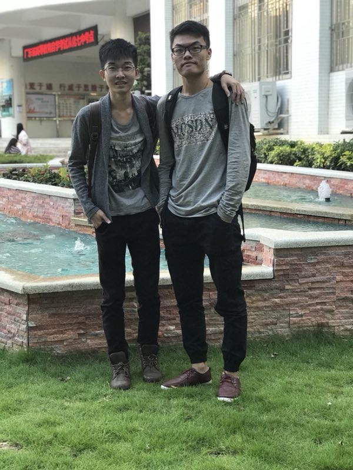

博客分类
追求现实里的炫酷青年
发布日期:2018-1-27 分类:心情
主人的这张照片是在高三的时候一个朋友帮我拍的,这张照片很有纪念意义,因为这记录主人的高中的叛逆,主人当时留了一个很长的头发,而且天天打着发胶去上学,旁边的同学都只能习惯我的发胶味道---
时光是一杯红酒
发布日期:2018-1-28 分类:心情
时光流逝,我已到大学,选了计算机网络专业,曾几何时,慢慢发现自己不知不觉在图书馆默默奋斗,顿时心里觉得很充实,但旁边的位置空着人,却慢慢习惯一个人的大学生活
自考道路上的陪伴

发布日期:2018-1-29 分类:心情
每个人都说大学过的很轻松,但我的大学生活比高中更加辛苦,因为在2015年的10月份,我跟班上的朋友一起报考了自考本科专业计算机应用本,突然回首时光,真心觉得不容易,感谢照片上的朋友自考道路上的陪伴,虽然他为了女朋友颓废了学业,但是主人觉得他很有男人的担当和责任感,现在虽然没有天天见面了,但是有空也会微信聊天和约出来见面,在这里主人要祝福他在未来的道路上越来越顺利---
迎接大学生活的尾声
发布日期:2018-1-29 分类:心情
虽然我的大学生活已经步入尾声,但是总觉得差了社会的经验和相关专业的知识,总是感觉学的东西不够多,但我知道,无论以后过的怎么样,我们网络三剑侠会永远的相互扶持和帮助,感谢你们,陪伴我度过辛苦的大学---
© 2017 Huang's Blog 版权所有 网站备案号: 京123456789